Jurgens du Toit
jrgns
Leveraging the ELK for API Analytics and Monitoring
Some Background
- Card Issuer
- Interface with MasterCard / Visa
- Interface with various Clients
- All using XMLRPC
- Microsoft Stack
The Need for Speed
SELECT * FROM Logs WHERE
LogString LIKE '%TERM%'
Elasticsearch?
Architecture
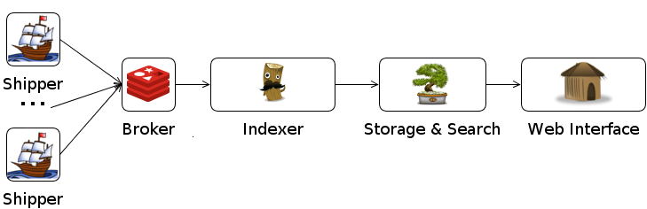Deployment
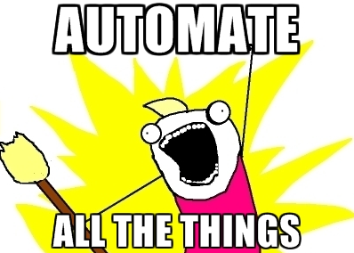
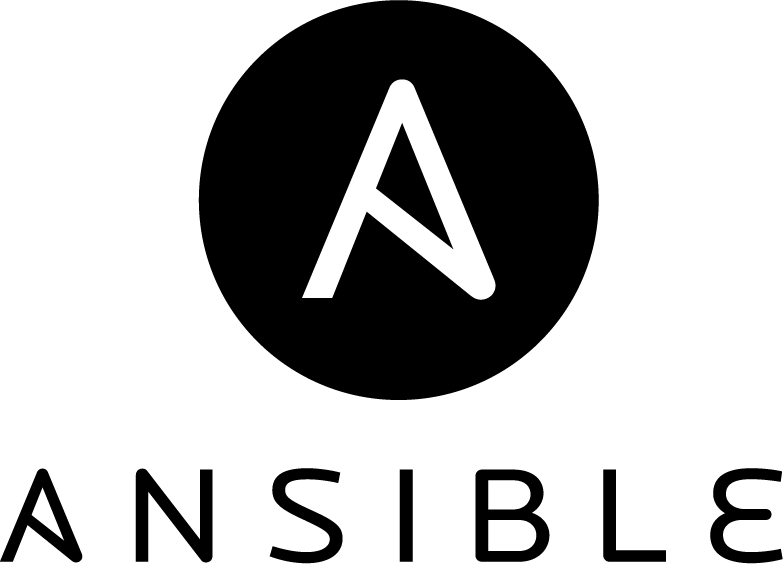
Elasticsearch Play
---
- hosts: elasticsearch
sudo: true
vars:
- ubuntu_release: precise
- logstash_redis_host: 127.0.0.1
roles:
- { role: basic_security, tags: [ 'setup' ] }
- { role: elasticsearch, tags: [ 'elasticsearch' ] }
- { role: logstash, tags: [ 'logstash' ] }
- { role: collectd, tags: [ 'setup' ] }
vars_files:
- roles/elasticsearch/defaults/main.yml
- roles/elasticsearch/vars/production.yml
Elasticsearch Role
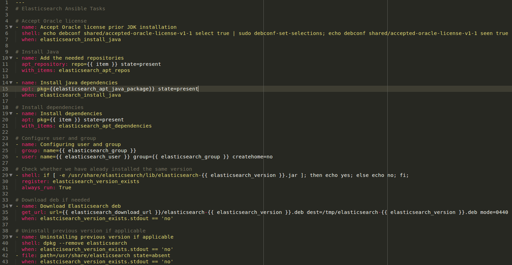Ingress
- Shippers
- Redis / Buffer
- Logstash
XML
xml {
source => 'xmlstring'
xpath => {
'/methodCall/params/param[1]/value/text()' => 'mti'
'/methodCall/params/param[2]/value/int/text()' => 'transaction_id'
'/methodCall/params/param[3]/value/text()' => 'node'
'/methodCall/params/param[4]/value/text()' => 'variant'
'/methodCall/params/param[5]/value/struct/member[name = 2]/value/text()' => 'pan'
'/methodCall/params/param[5]/value/struct/member[name = 3]/value/text()' => 'procedure_code'
'/methodCall/params/param[5]/value/struct/member[name = 4]/value/text()' => 'transaction_amount'
'/methodCall/params/param[5]/value/struct/member[name = 5]/value/text()' => 'settlement_amount'
...
}
}
Ruby
ruby {
code => "
return if event['acceptor_name'].nil?
acceptor_name = event['acceptor_name'].pack('H*').gsub(/[[:cntrl:]]/, ' ')[5..-1]
event['acceptor_name'] = [acceptor_name.clone]
if acceptor_name.length > 35
len = 0
acceptor_name.gsub!(/^[0-9]{2}/) { |elm| len = elm.to_i; '' }
event['acceptor_name_merchant'] = acceptor_name[0, len].upcase
acceptor_name.gsub!(/^.{#{len}}/, '')
acceptor_name.gsub!(/^[0-9]{2}/) { |elm| len = elm.to_i; '' }
end
...
"
}
Store
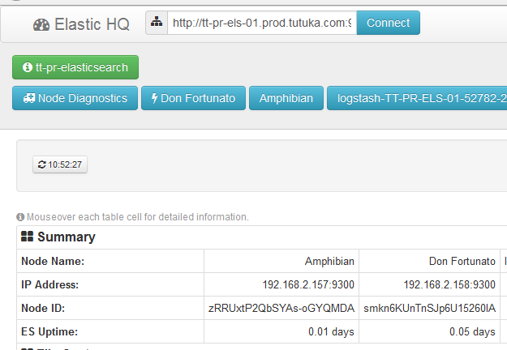Visualization
Kibana
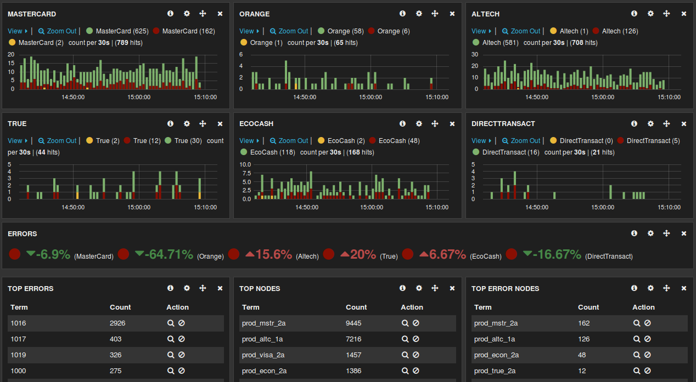Dashing
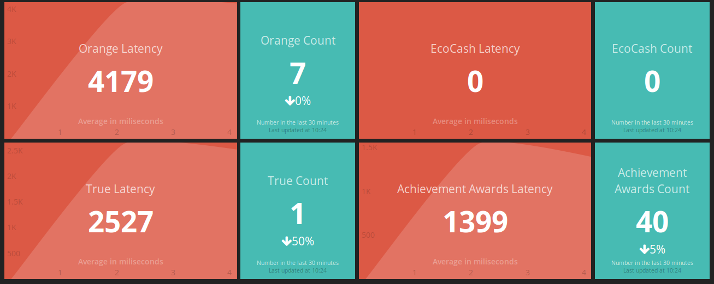Analytics / Monitoring
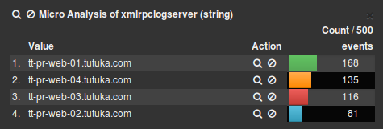CollectD
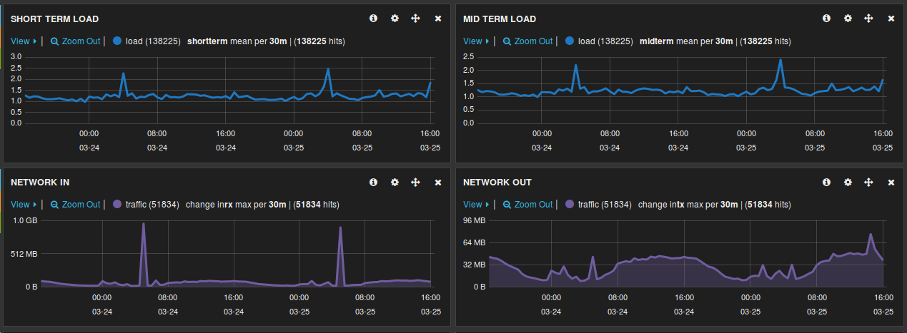Kolmogorov-Smirnov
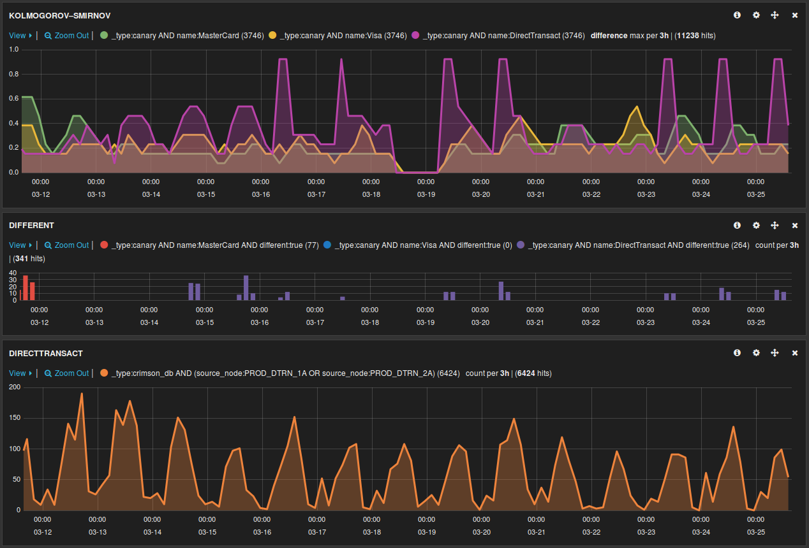And some search
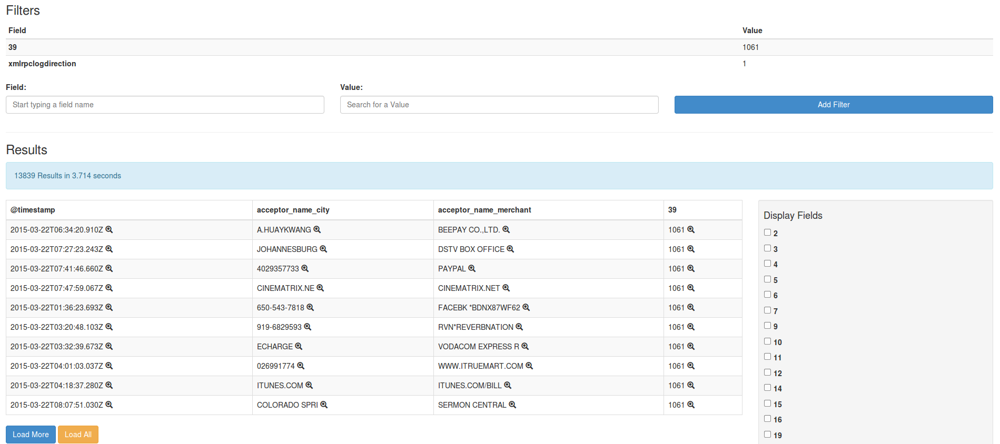Challenges
- Security / PCI
- XML-RPC
- Revolution!
Needle in a stack of Needles
Find me something that isn't there
Future
- More Data
- More Analytics
- Simpler Dashboards
- Simpler Interfaces
Questions?
Thanx!
Check Out: